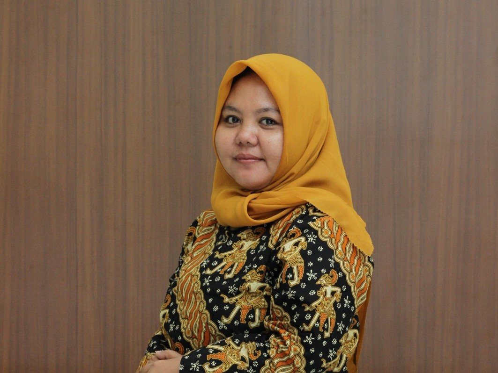
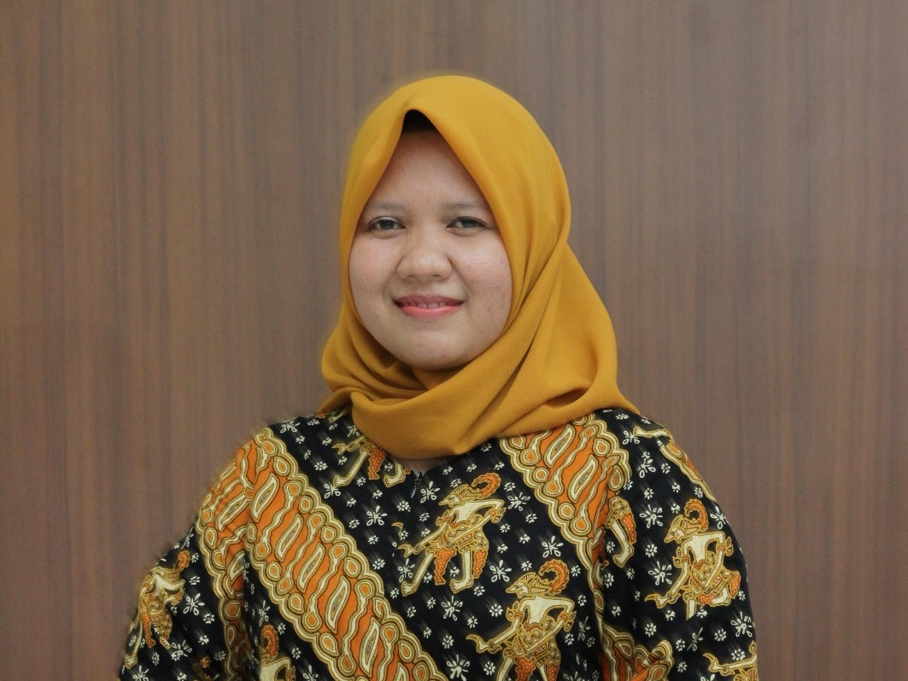
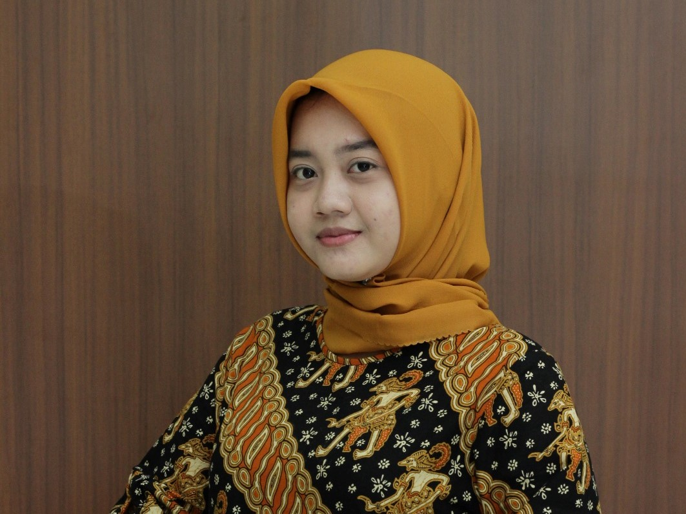
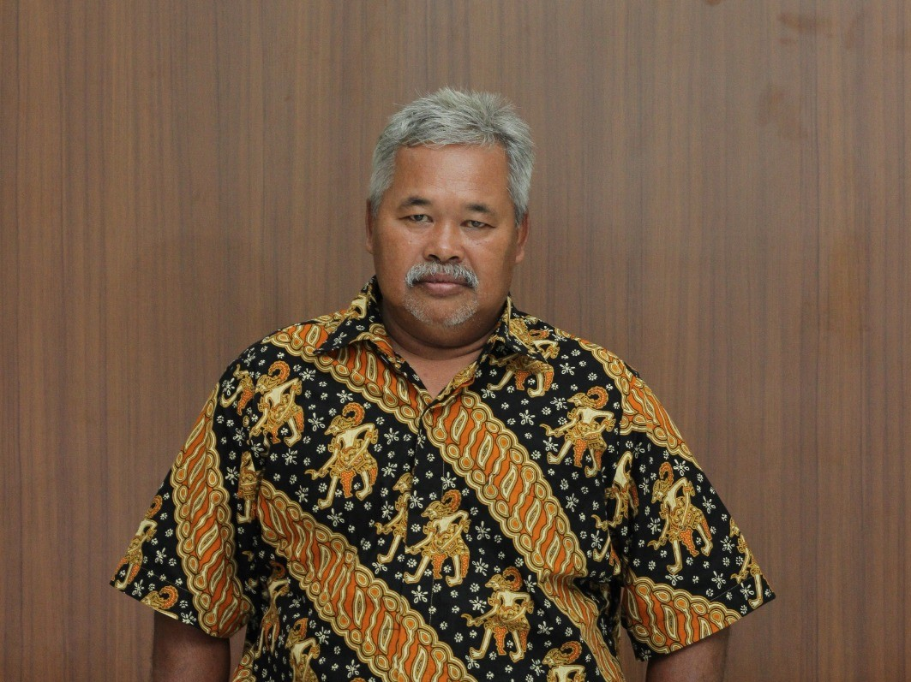
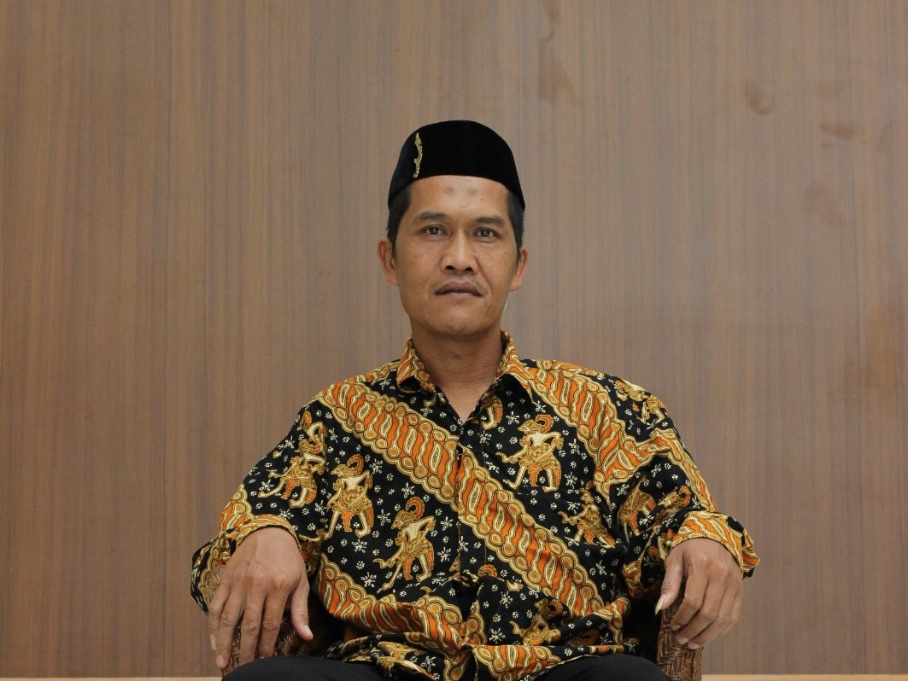
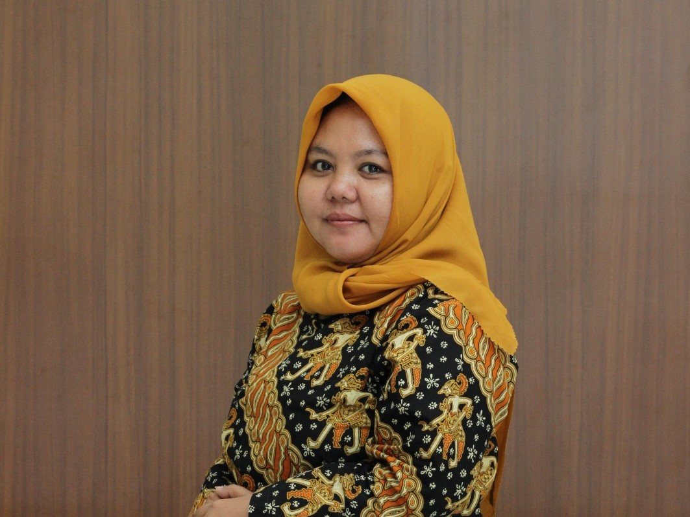
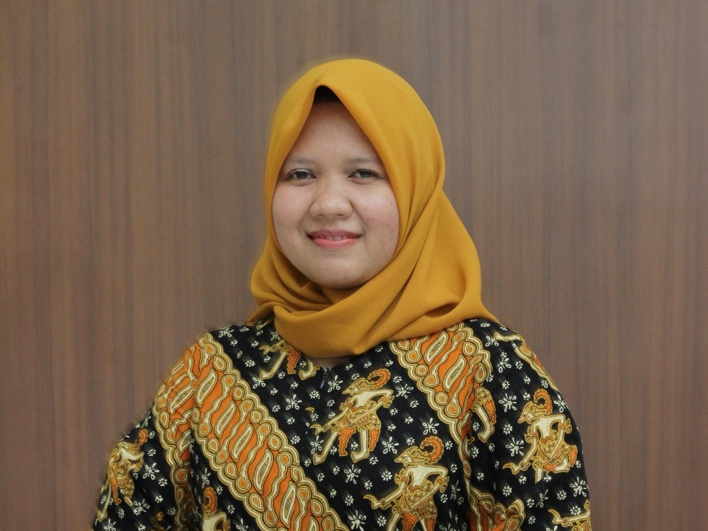
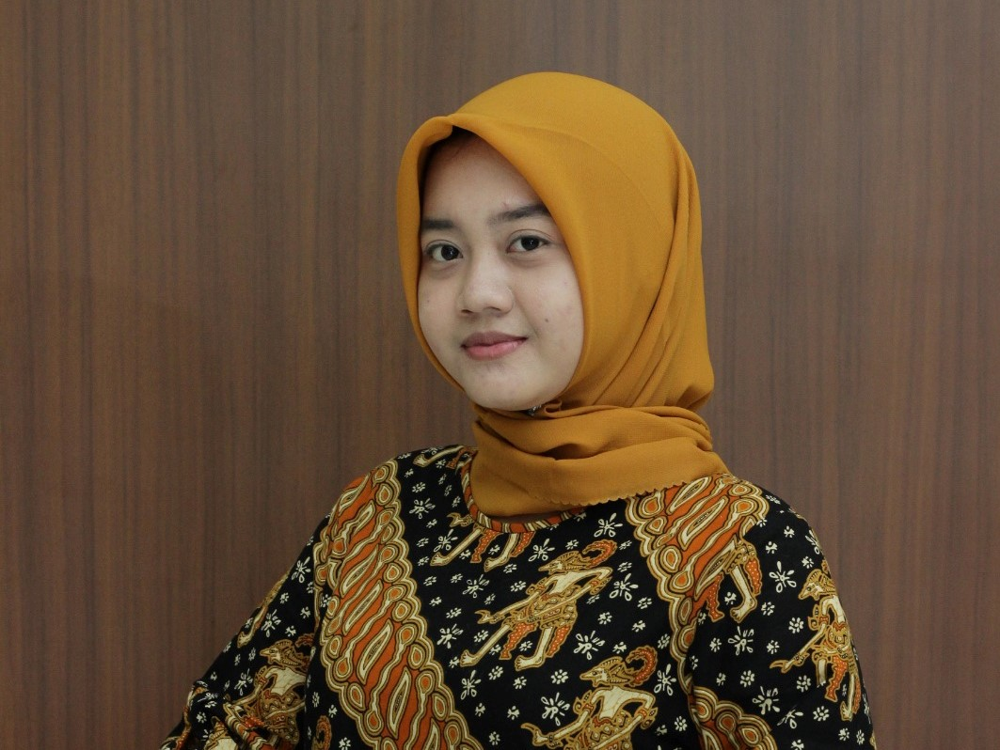
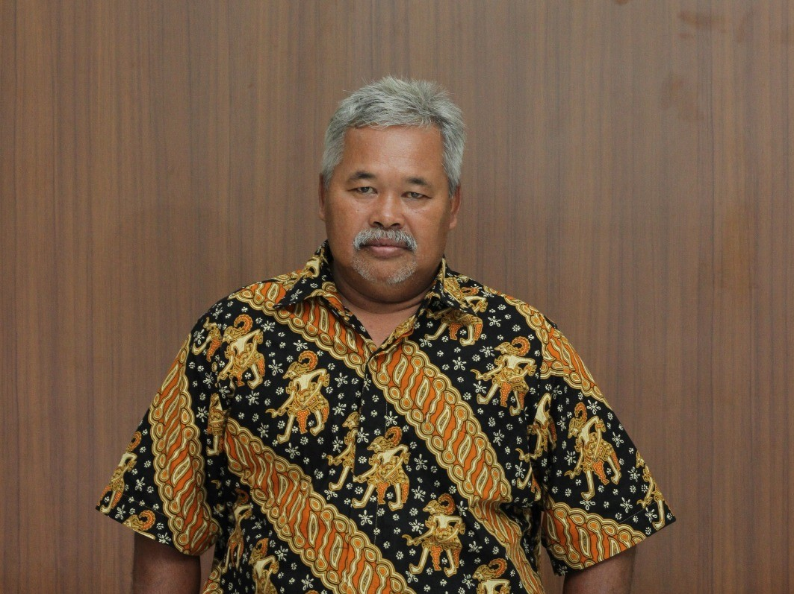
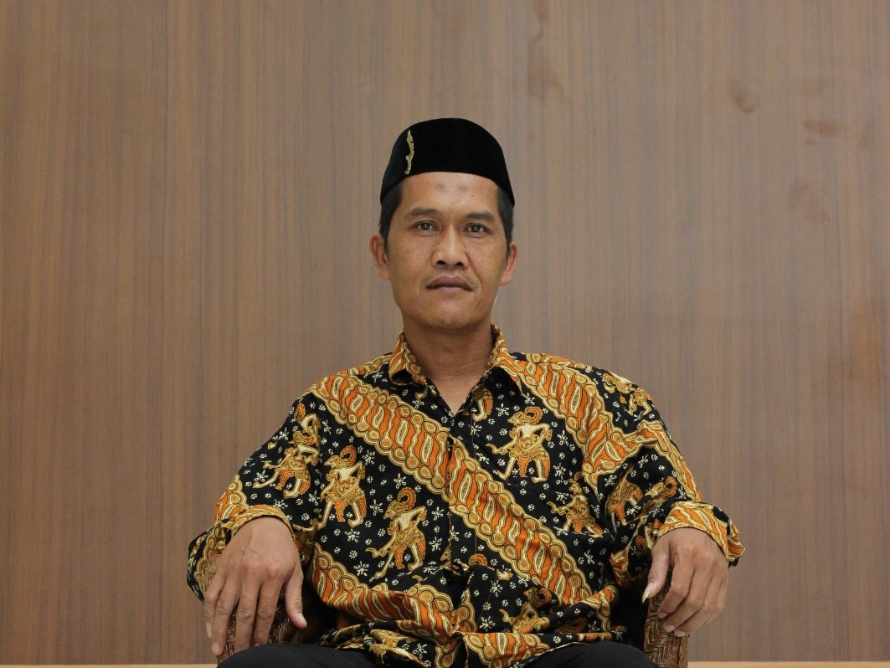

Visi
"Terbangunnya tata kelola pemerintah desa yang transparan guna mewujudkan desa astapada yang maju, bermartabat, berbudaya dan agamis."
Misi
1. Mewujudkan desa yang berwawasan dengan mengedepankan aspek pemberdayaan masyarakat
2. Peningkatan kualitas infrastruktur, sarana dan prasarana desa.
3. Peningkatan tata kelola pemerintah yang baik dan akses partisipasi warga dari perencannan, implementasi dan pengawaasan program-program desa.
4. Merubah kinerja aparat desa dengan memfungikan tupoksi
5. Optimalisasi posyandu dalam upaya meningkatkan kesehatan ibu dan anak.
6. Mengoptimalkan peran dan fungsi Rt/Rw dan lembaga desa dalam melayani kepentingan masyarakat.
7. Membangun kualitas sumber daya manusia yang cerdas dan berintegritas.
8. Membangun struktur ekonomi desa yang tangguh dan berdaya saing.
9. Membuka akses ekonomi desa untuk pemerataan kesejahteraan dan keadilan warga desa.
10. Meningkatkan kualitas lingkungan pemukiman yang nyaman huni dan bermartabat.
11. Mengembangkan seni, tradisi, budaya dan kearifan lokal. Dalam aspek membangun kehidupan masyarakat desa.
12. Membangun kolaborasi strategis berbasis potensi dengan pemerintah,dunia usaha, LSM dan desa-desa lainnya.
13. Menguatkan lembaga keagamaan dalam rangka membangun spiritualitas dan berperan dalam aspek sosial ekonomi umat.
14. Memberikan peluang kerja mandiri untuk generasi muda sipaya tidak menjadi pengangguran.
15. Menggali PAD dengan cara memperbaiki tata kelola dan administrssi aset desa.
16. Pembangunan sistem keterbukaan informasi publik melalui desa digital.
17. fasilitas dukungan layanan bagi lansia, penyandang disabilitas dan yatim piatu
18. Program pemberdayaan pemuda dalam pengembanga keterampilan usaha.
 








